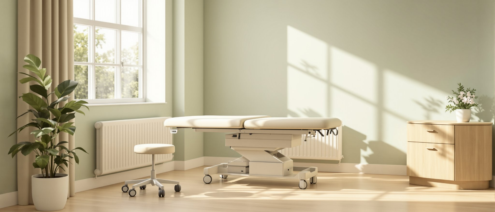

Test 01
Electromyography (EMG)
Produces a tracing
Nerve conduction velocity, electromyography and diagnostic vascular studies, on site, in one visit.

01 / Auto accident injury treatment, San Jose
You were hit somewhere in San Jose, and right now the only record of your injury is the way you describe it. We test for nerve and soft-tissue damage on site, in one visit, and we write down what the instruments find. Book a no-cost evaluation, or call and we will tell you what to do first.
Performed on site, in one visit
02 / The first 72 hours
Rule out an emergency. Severe headache, vomiting, confusion, loss of consciousness, or numbness or weakness in an arm or leg belongs in an emergency room now, not in a clinic office.
Get examined and documented. Findings recorded soon after the collision are the cleanest record you will ever have of what the crash did to you, and they are far harder to question months later.
Then decide about an attorney. Being examined first means whoever handles your claim starts from a medical record rather than from a memory. We are a clinic. We do not give legal advice, and we do not tell you what to do about your case.
03 / Delayed onset
Adrenaline is a painkiller with a short shelf life. In the hours after a collision it can mask an injury completely. Soft-tissue damage also swells on its own schedule. Inflammation builds over the following days, which is why stiffness, headache and reduced neck movement so often arrive on day two or day three instead of at the scene. Feeling fine on the day is common and it is not a problem. It is simply not evidence that nothing was hurt. It is not evidence that something was, either. That is what testing settles, and what a test shows differs between patients.
04 / What we test for nerve injury
Electromyography, or EMG, records the electrical activity inside a muscle. Nerve conduction velocity testing measures how fast a signal travels along a nerve, and whether it is slowed or blocked along the way. Both produce a tracing. That means a nerve injury can show up as a measurement rather than as a description of how you feel. A normal result is useful too, and we tell you when we get one. We perform both on site. In a capability sweep of 53 competitor pages across six San Jose auto-injury practices, measured in August 2026, none advertised either test. Findings vary from person to person.

Test 01
Produces a tracing
Test 02
Produces a tracing
05 / What we test for soft tissue and circulation
Diagnostic vascular studies check blood flow through the vessels in your neck and limbs, which a collision can disturb. Diagnostic ultrasound images soft tissue: the muscle, tendon and ligament that an X-ray cannot show. High-frequency digital X-ray shows bone and spinal alignment. Digital X-ray is standard equipment in this market, so we do not present it as anything special. It is the floor, not the finding. In the same August 2026 sweep of six San Jose auto-injury practices, four of six advertised diagnostic ultrasound and none advertised vascular studies. What each study shows varies with the person and the injury.

Capability sweep, August 2026: 53 competitor pages across six San Jose auto-injury practices.
06 / All of it in one visit, on site
The primary work-up happens here. Nerve testing, vascular studies, diagnostic ultrasound and digital X-ray are performed on site, in a single visit, with no outside referral needed. Sending testing out to imaging centres and specialists is a normal way to practise and it works fine. It also means separate appointments, separate schedules, and often weeks before anyone holds the results together in one file. Weeks matter while the record of your injury is still being built. If your case needs something we do not have here, MRI for example, we say so and refer you to a facility that does.
07 / Vehicle damage does not predict injury

Photographs of the car
Vehicle damage is a poor predictor of occupant injury. A car and the person inside it absorb force differently, and a collision that leaves little visible damage can still load a neck hard enough to injure it. Photographs of the car tend to drive the conversation about your claim. We examine the person instead. If your bumper looks fine and your neck does not feel fine, that is a reason to test, not a reason to dismiss it. What testing finds varies case by case.
We examine the person instead.
08 / Who pays
Note 01
We accept liens. In practice that means treatment can go ahead while your claim is open, with no payment from you during care if you qualify, and payment handled later out of the case. Auto-accident care is usually billed to the at-fault driver's insurer. [UNCONFIRMED]
Note 02
There is no 100% in this. What your policy and your case actually cover depends on both, and anyone quoting you a figure before reading them is guessing. We check your coverage with you before care begins and we tell you what we find. A lien is a payment arrangement, not a promise of payment.
09 / The documentation your claim needs
A documented injury report is the written record of what was found, when it was found, and how it was measured. Ours sets out the history you gave us, the physical examination, the results of any nerve, vascular, ultrasound or X-ray study performed, the diagnosis, the treatment plan, and the dates of care. A pain scale is a number you report. A nerve conduction tracing is a number an instrument produced. Both belong in the file, and the second one is harder to argue with. We do not advise you on your claim and we never put a value on it. Outcomes vary from case to case.

The written record
10 / Working with your attorney
If you have a personal-injury attorney, we keep them current on three things: the treatment plan, your progress, and the cost of treatment to date. Records and reports go out on request. If you do not have an attorney, you do not need one in order to be examined here, and we will not push you toward hiring one. When a question is a legal question, our answer is to ask your attorney. We do not advise on settling, signing, or what a case is worth.
No legal advice
11 / What the ER did not test
An emergency room does a specific job and does it fast. It rules out the injuries that can kill you, a bleed, a fracture, an organ injury, and it discharges you with pain medication and instructions. After a serious collision that is the right first stop, and if your symptoms call for it we will send you there rather than treat you here. What an ER visit is not built to be is a soft-tissue and nerve work-up. Neck strain and nerve irritation often do not appear on the studies an ER runs, because those studies were looking for something else. Come here afterwards for the testing the ER was not there to do.
Come here afterwards for the testing the ER was not there to do.

Come here afterwards
12 / Injuries we see after collisions
How any of these responds to care differs from one patient to the next.

13 / Proof
4.9 out of 5 from 98 ratings on Healthgrades. [UNCONFIRMED]
Verification
We have not been able to verify that ourselves. The profile returned an HTTP 403 when we tried to read it, so the number comes off a search surface rather than a first-party check. It does not ship until the owner authorises it and we re-verify it with a date attached. We would rather say that plainly than round it up.
Credentials
Dr. Timothy Jennings, DC holds board certifications in applied kinesiology, pain management, clinical nutrition, integrative medicine and anti-aging medicine, and is a graduate of Palmer College.
14 / First visit and availability
Sooner helps for two reasons: inflammation is easier to assess early, and findings recorded close to the collision are harder to dispute later. If days have already passed, come in anyway.
Same-day appointments are usually available. [UNCONFIRMED] Call and ask for the soonest opening.
We take your history, examine you, and run the testing your symptoms call for. You leave knowing what was found and what we recommend.
Monday to Thursday, 7:00 to 12:00 and 3:00 to 5:30. Friday, 8:00 to 12:00 and 3:00 to 5:30. Closed Saturday and Sunday. [UNCONFIRMED]
A no-cost consultation and evaluation. Liens accepted, so nothing is paid while your claim is open.